Ved du heller ikke hvad du skal stemme?
For at hjælpe dig på vej har vi udviklet en hjemmeside der kan hjælpe dig. Kig rundt på vores hjemmeside og bliv lidt klogere på, hvad du skal stemme.
Partierne
Udforsk de forskellige partier her eller tag en kandidattest, det kan være du bliver kloger på hvad du skal stemme. For at hjælpe på vej med at lærer mere om partierne, kan du klikke på ikonerne nedenfor og når du er færdig med at læse om spidskandidaten, så klik igen for at lukke vinduet igen.
-


-
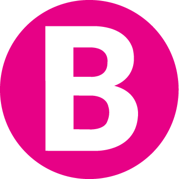

-
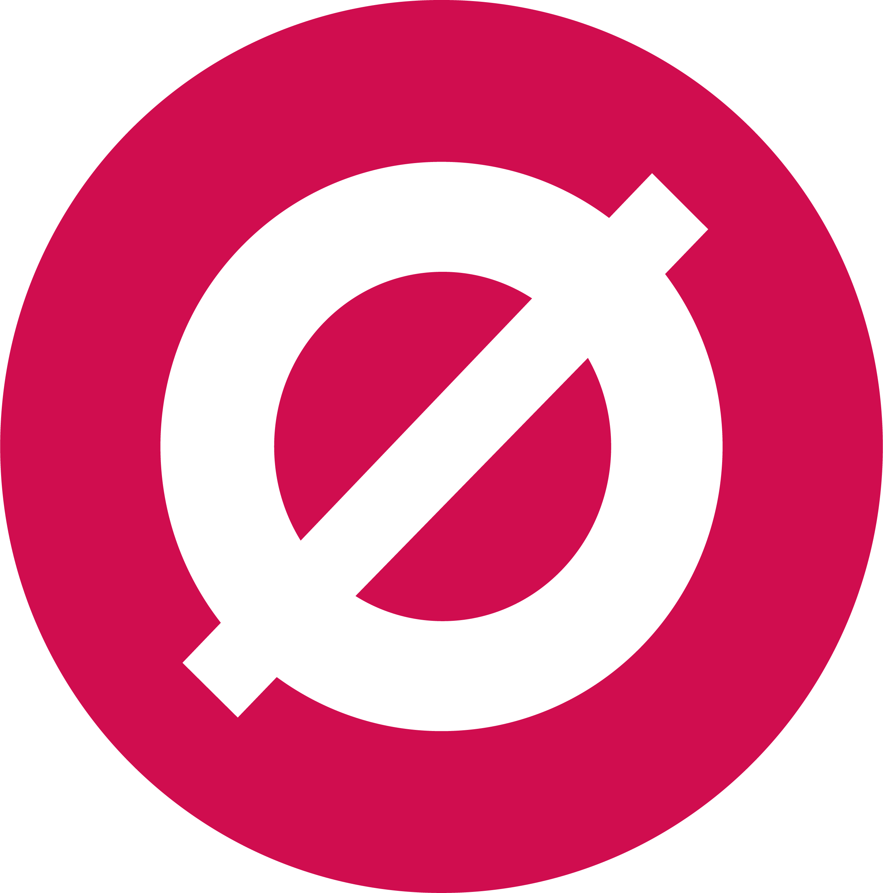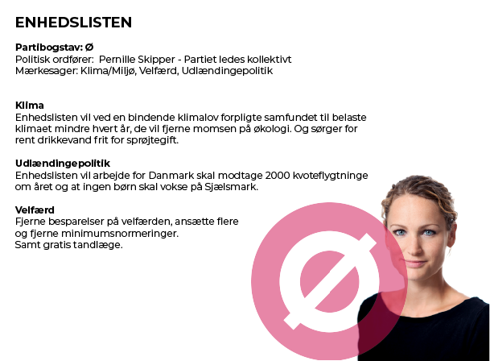
-
 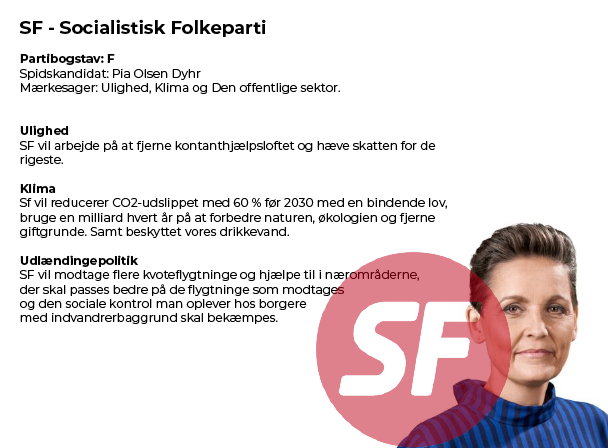
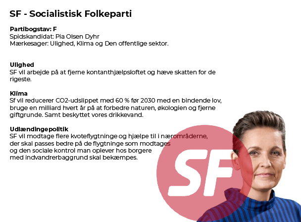
-
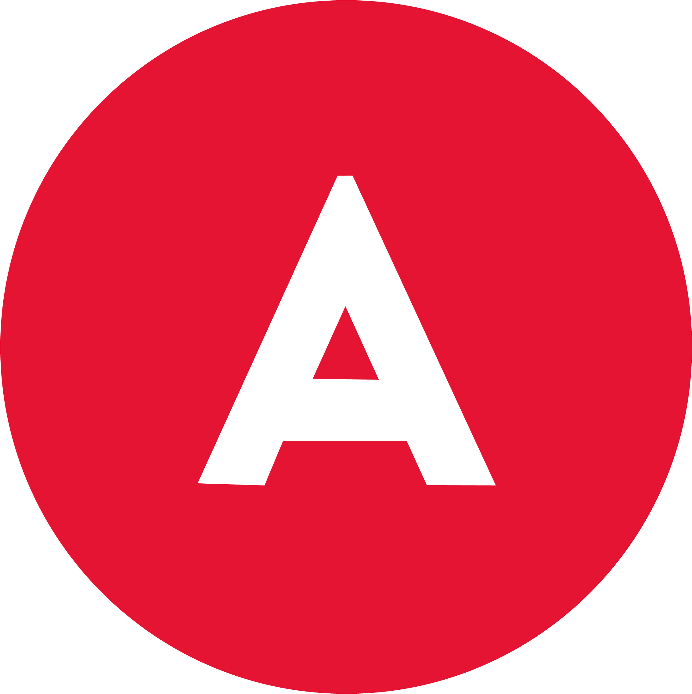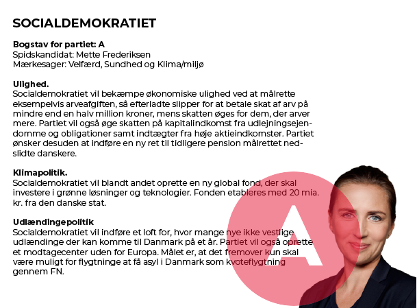
-
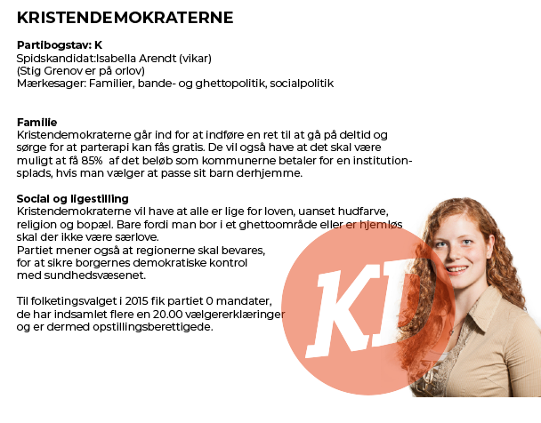
-
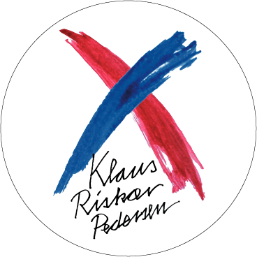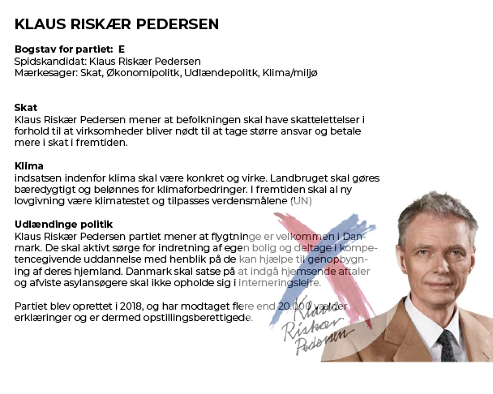
-
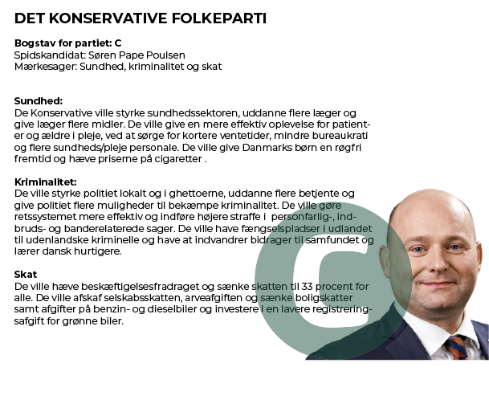
-
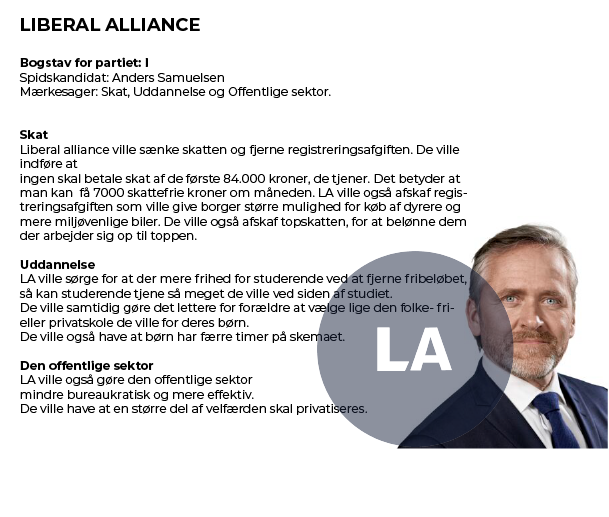
-
 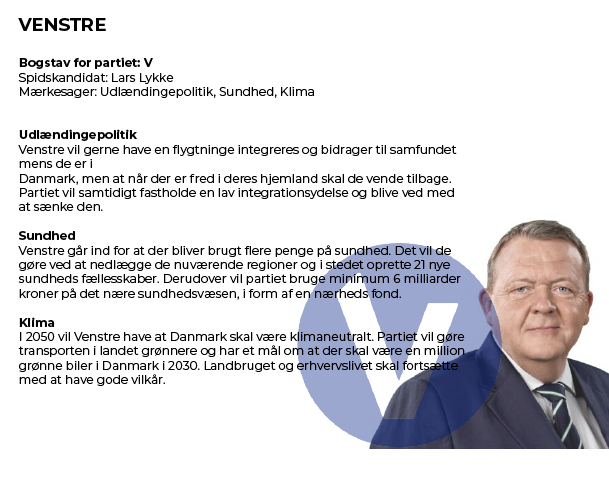
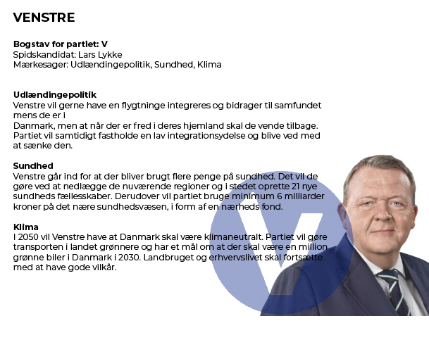
 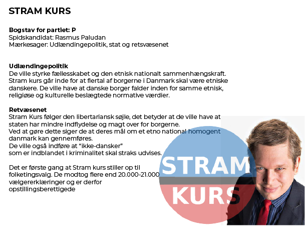
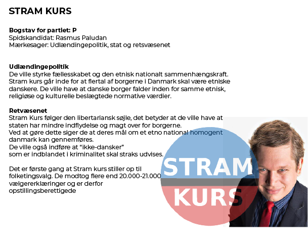
- 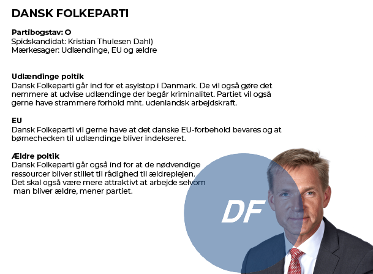
 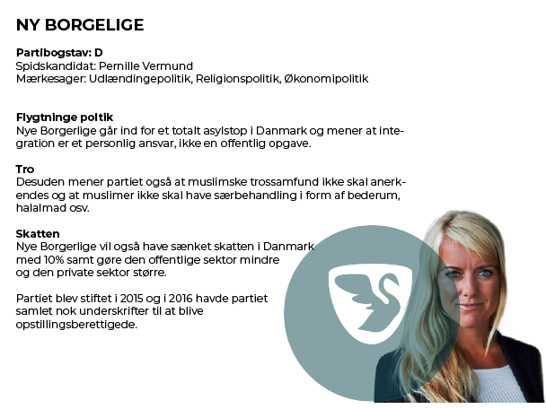
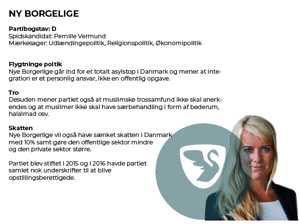
Parti test
Er du stadig i tvivl om hvem du skal stemme på? Bare rolig, med vores parti test kan du få en ide om hvilken parti du skal stemme på til det kommende folketingsvalg. Der bliver givet en række point til hvert parti ud fra dine svar. Dine resultater ligger i rækkefølge, hvor de partier med flest point er dem du er mest enig med og de partier med færrest point er dem, som du er mest uenige med. Testen skal hjælpe dig med at danne overblik over hvor du ligger ideologisk. Du behøver ikke stemme efter din højeste resultat.
Synes du Danmark gør nok for Miljøet?
Skal der indføres klimaafgifter på for diverse forbrugsvarer? (på f.eks. flyrejser og kød)
Skal der være større stramninger af udlændingepolitikken?
Skal der være asylstop i Danmark?
Skal prisen på cigaretter hæves?
Skal uddannelses-loftet afskaffes?
Skal topskatten fjernes?
Kontanthjælpsloftet bør fjernes?
Skal det være lovligt at købe og ryge cannabis?
Der bør indføres en lov om samtykke i forbindelse med sex?
Grafik info
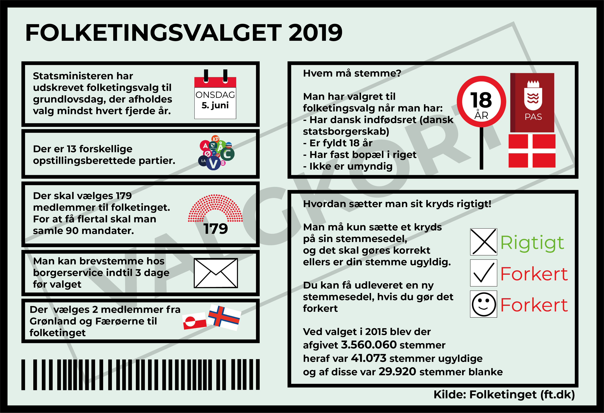Vores APP
Se vores video nedenfor og lær mere om vores nye APP, hvor du frit kan lære mere om valget, hver gang du render ind i en valg plakat, om det er på løbeturen, når du er ude og lufte hunden, uanset hvornår, er det bare at finde APPen frem. Det er simpelt: Åben APPen scan valgplakaten, tryk på kandidaten og hør mere om deres politik. Hvis det ikke er nok har du også mulighed for at chatte med kandidaterne.
Nu er det din tur til at komme ud og igang, og blive klogere på valget. Download APPen nedenfor og find ud af hvem du skal stemme på til folketingsvalget.
Vores sociale medier